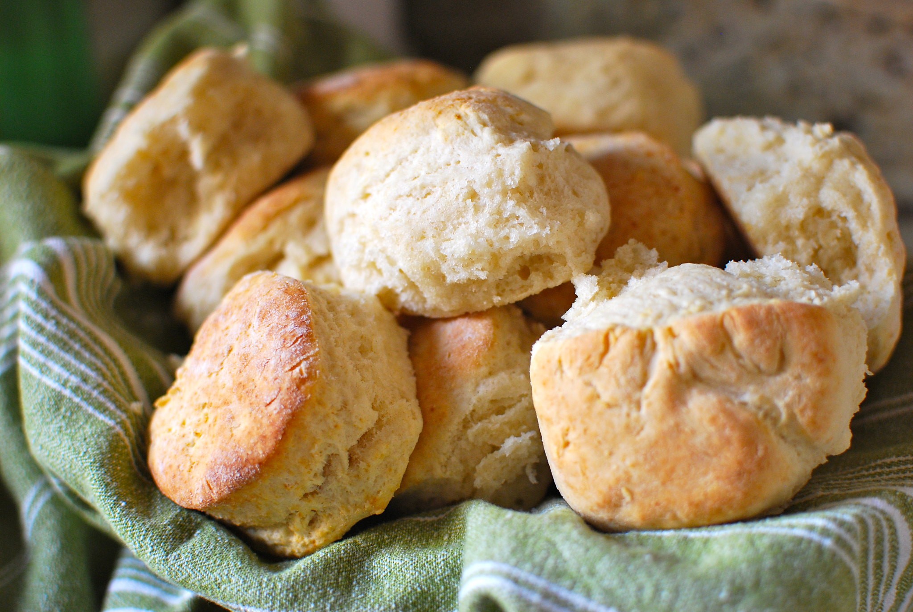

Homemade Biscuits

Breakfast time at our house means a fresh start, and of course fresh biscuits! A family favorite that’s so simple to make.
If you throw a few unsalted sticks of butter in the freezer ahead of time, you’ll be ready to bake these anytime!
You’ll need a clean counter space to spread the dough and cut out the biscuits.
Put your butter in the freezer overnight for best results. Preheat your oven to 450F while you grab the following ingredients:
- 2 cups of all purpose flour
- 1 TBSP of baking powder
- 1 TBSP of sugar
- 1 TSP of salt
- 3/4 cup of cold milk
Directions:
- In a large bowl mix together the flour, baking powder, salt and sugar.
- Use a cheese grater to add the frozen butter to the mixture in chunks.
- Stir the butter and flour mixture together.
- Once mixed, add cold milk and stir together to form a loose dough.
- Press dough into a rectangular sheet and fold onto itself. Repeat this a few times, pressing lightly. Too much handling will cause your butter chunks to melt.
- Once you have folded your dough a few times, press the dough out and begin cutting your biscuits. A small cup is handy for this.
- Place biscuits onto a cookie sheet and bake for 10-12 minutes, or until golden brown.
Pair with eggs, sausage, and gravy for a wonderful fresh country breakfast!